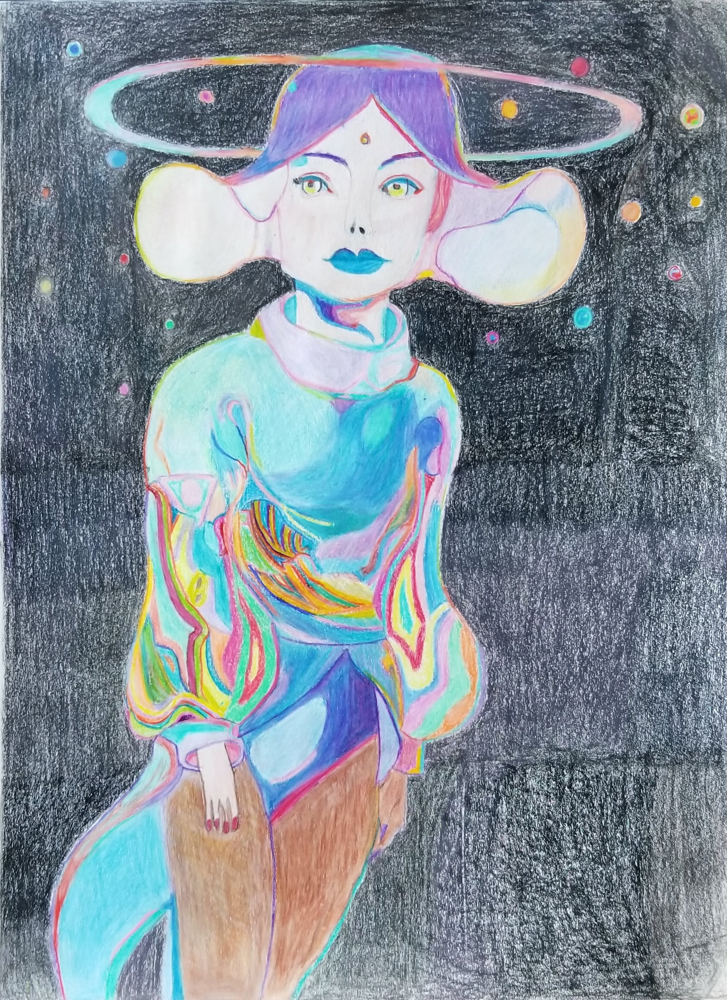
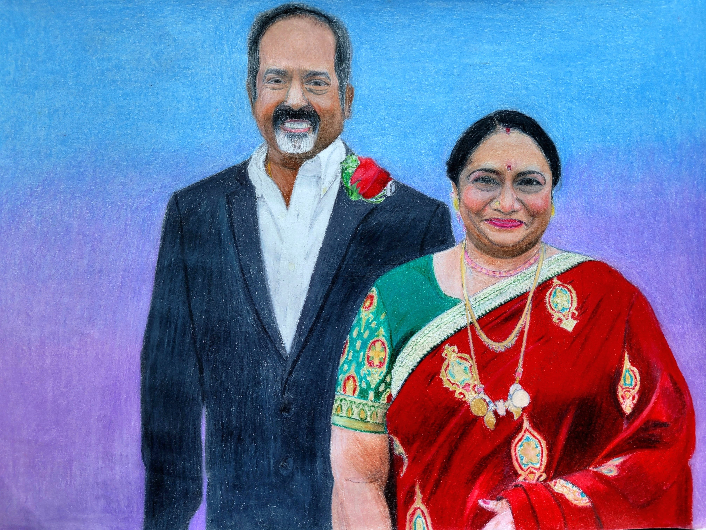
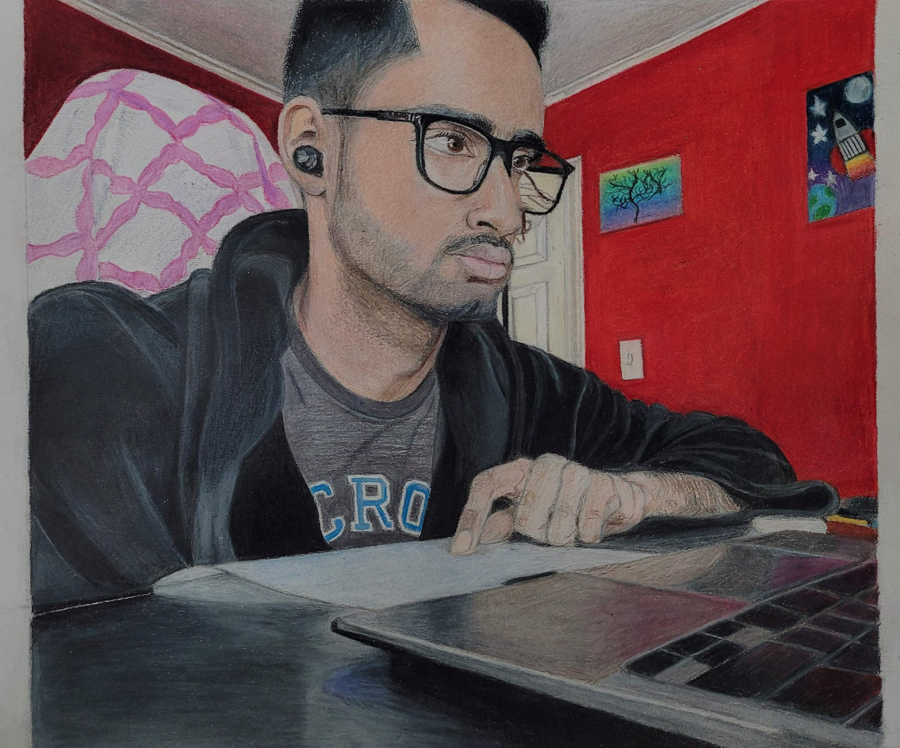
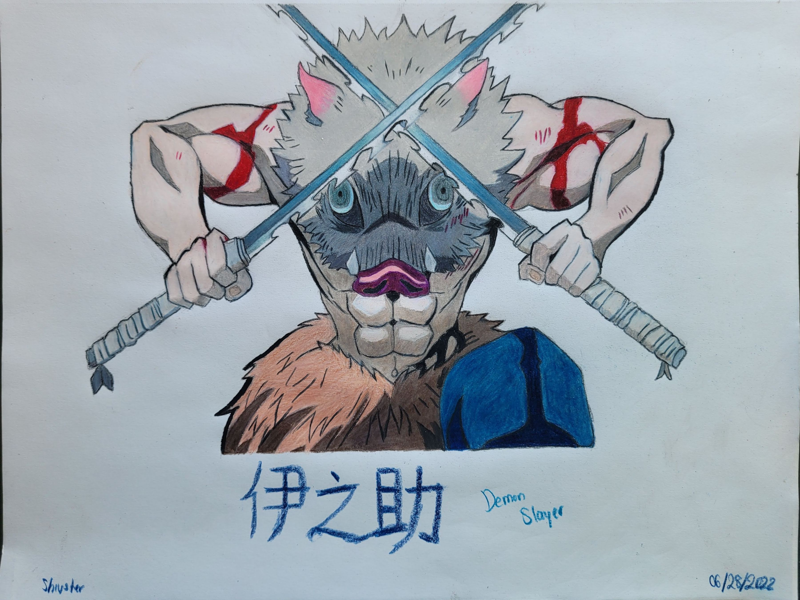

Space Alien Portrait:
One of the first, serious pieces done for an assignment done within a week in November 2020.
Shiva used prismacolor pencils to draw out a supposed woman having a human/alien face and vibrant outfit, within a galaxy.
Though not the work Shiva produces today, this represented the time where his art love became serious, and would grow and improve later on.

Parents Portrait:
One of his most prized pieces, Shiva did his parent's portrait within March 2022.
Using prismacolor pencils, Shiva created this piece as part of his Sustained Investigation, to thank his lovely parents, and his cultural background.
This piece was very special as the real portrait was taken on his parents' 30th Anniversary.

Studious Color Pencil Drawing:
Started and finished the entire piece within April 2022.
As part of his Sustained Investigation, Shiva drew a piece that reflected his studious and persistent mentality, striving to grind through his work even with challenges.
Using his trusty Prismacolor pencils, Shiva drew this piece to show his studious side.
This became a favorite piece, described as hyper-realistic and vibrant, showing Shiva's artistic growth hitting his peak!

Demon Slayer Drawing:
One of the last pieces Shiva did in '22, he decided to draw out the Demon Slayer Character Inosuke.
Using his forte, Shiva drew out the beastly, aggressive, playful, and combative boar, that shocked many people. Shiva was impressed by the hyper-realistic, and fighting nature of the drawing.
Links to this stage of drawing
How My ArT ChanGED iN 16 YeArs...30 Tips That Will Improve Your Drawing